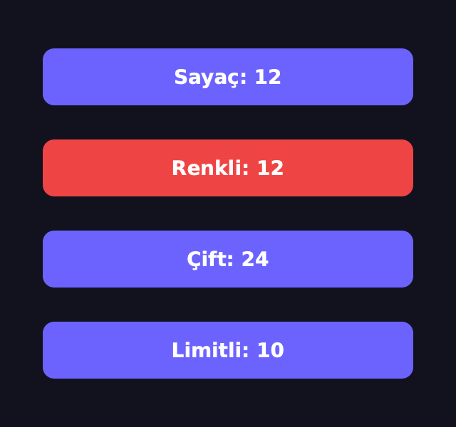
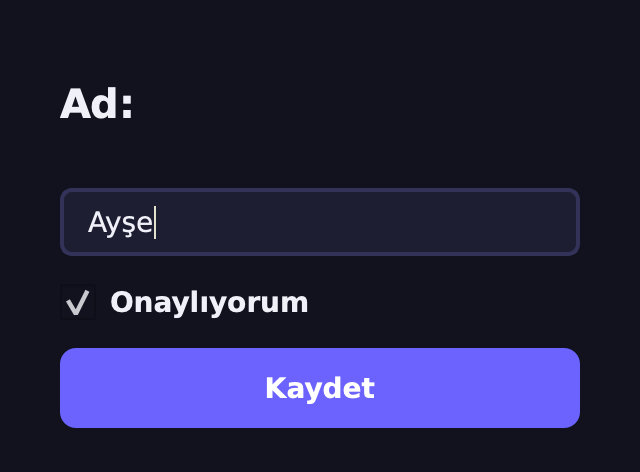
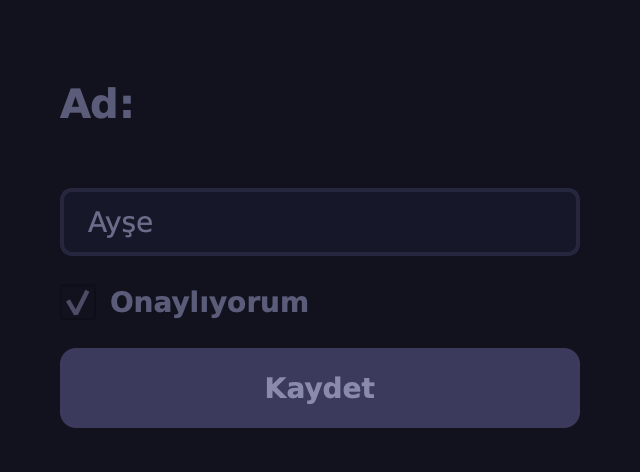
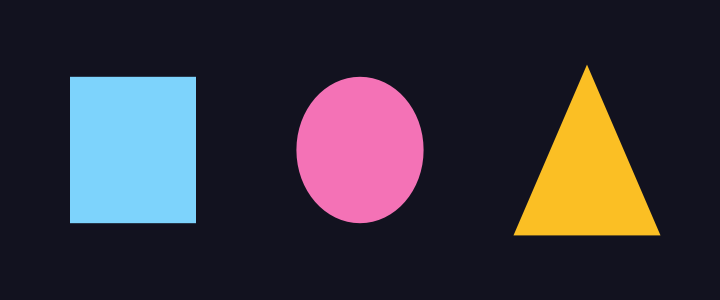
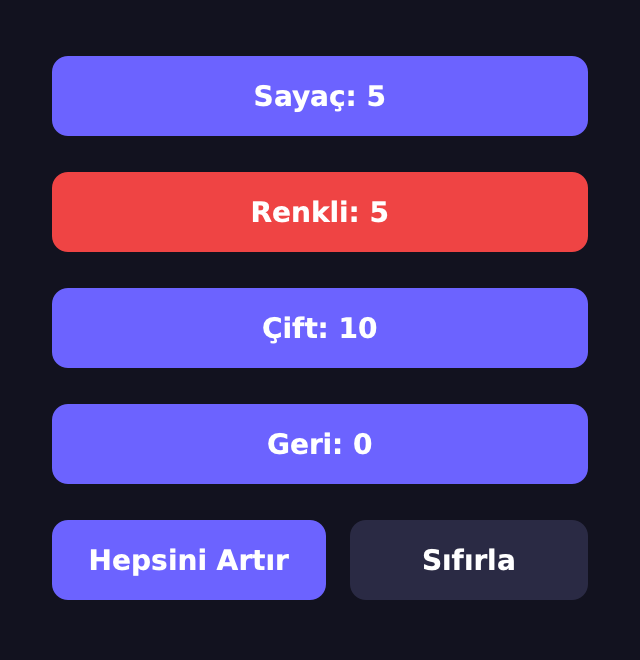

Aynı Çağrı,
Farklı Davranış
Polimorfizm — Ezilmiş Metotlar ve Ördek Tipleme
Ezdik — Şimdi Hepsine Aynı Mesajı Gönderelim
Geçen hafta artir()'ı üç farklı biçimde ezdik. Bu hafta o butonları tek
bir listede toplayıp aynı çağrıyla yöneteceğiz: her biri kendi bildiği gibi tepki verecek.
1 · Fikir
Çok biçimlilik: aynı mesaj, nesneye göre farklı davranış.
2 · Kalıtımla
Ezilmiş metotlar + tek döngü; Python hangisini çağrı anında seçer?
3 · Ördek Tipleme
Ortak ata şart mı? Hayır: aynı metodu taşıması yeter.
4 · Qt'de
addWidget, setEnabled, paintEvent: Qt baştan sona
polimorfik.
Sonunda: dört farklı butonu iki düğmeyle yöneten bir Kontrol Paneli yapacağız.
Akıllı Buton Ailesi
Geçen haftanın projesi: aynı atadan türeyen, artir()'ı
farklı ezen üç buton.
🔴 RenkliButon
super().artir() + 5'e gelince kırmızı. Genişletme.
✌️ CiftButon
super().artir() iki kez:
ikişer sayar.
🛑 LimitliButon
Yalnız sayac < 10 iken super().artir(): 10'da durur.
Üçünün de artir() metodu var ama gövdeleri
farklı. Soru: Bunları bir listeye koyup hepsine b.artir() dersek ne olur? Hangi
artir çalışır?
Polimorfizm Nedir?
🔤 Kelime
Yunanca poly (çok) + morph (biçim): çok biçimlilik. Tek bir ad, birçok biçimde davranış.
📨 Mesaj ve alıcı
b.artir() bir
mesajdır. Ne yapılacağına mesajı gönderen değil, alan nesne karar verir.
⏱️ Karar anı
Hangi gövdenin çalışacağı kod yazılırken değil, çağrı anında nesnenin türüne bakılarak seçilir.
Günlük hayattan: “Konuş!” dediğinde kedi miyavlar, köpek havlar, papağan tekrar eder. Komut aynı, davranış hayvana göre değişir.
Python Her Yerde Polimorfik
len("Trabzon") # 7
len([3, 1, 4]) # 3
len({"ad": 1, "yas": 2}) # 2
3 + 4 # 7
"Yapay " + "Zekâ" # 'Yapay Zekâ'
[1, 2] + [3] # [1, 2, 3]📏 Tek len()
Metin harf, liste eleman, sözlük anahtar sayar. Her tür “uzunluğunu” kendisi bilir.
➕ Tek +
Sayılarda toplar, metinde ve listede uç uca ekler. Nasıl yapılacağını iki taraftaki nesne belirler H5
Bu hafta aynı gücü kendi sınıflarımıza vereceğiz.
Aynı Ad, Üç Farklı Hesap
class Sekil:
def alan(self):
return 0
class Kare(Sekil):
def __init__(self, a):
self.a = a
def alan(self): # aynı ad, kendi formülü
return self.a ** 2
class Daire(Sekil):
def __init__(self, r):
self.r = r
def alan(self):
return round(3.14159 * self.r ** 2, 2)
for s in [Kare(3), Daire(1), Kare(5)]:
print(type(s).__name__, s.alan())
# Kare 9
# Daire 3.14
# Kare 25Döngü yalnızca s.alan() der. Kare mi, Daire mi, umursamaz.
Her sınıf alan()'ı ezdi (H3); doğru formülü nesnenin kendisi
getirir.
Kalıtım + ezme = polimorfizmin en yaygın biçimi.
Aile, Tek Yerde
class SayacButonu(QPushButton): # H2'den
ad = "Sayaç"
def __init__(self):
super().__init__()
self.sayac = 0
self.clicked.connect(self.artir)
self.guncelle()
def guncelle(self):
self.setText(f"{self.ad}: {self.sayac}")
def artir(self):
self.sayac += 1
self.guncelle()class RenkliButon(SayacButonu): # H3: 5'te kırmızı
ad = "Renkli"
def artir(self):
super().artir()
if self.sayac >= 5:
self.setStyleSheet("background:#ef4444")
class CiftButon(SayacButonu): # H3: ikişer sayar
ad = "Çift"
def artir(self):
super().artir()
super().artir()
class LimitliButon(SayacButonu): # H3: 10'da durur
ad = "Limitli"
def artir(self):
if self.sayac < 10:
super().artir()Yenilik: ad bir sınıf
özniteliği; her çocuk kendi ad'ını verir, guncelle() hep self.ad'ı okur.
Tek Döngü, Dört Davranış
butonlar = [SayacButonu(), RenkliButon(),
CiftButon(), LimitliButon()]
for _ in range(12): # "Hepsini artır" 12 kez
for b in butonlar:
b.artir() # aynı çağrı...
for b in butonlar:
print(b.text()) # ...dört farklı sonuç
# Sayaç: 12
# Renkli: 12
# Çift: 24
# Limitli: 10
Döngünün içinde ne if var ne tür
kontrolü. b.artir() her seferinde o nesnenin artir'ını çalıştırıyor.
“Hepsini Artır”a Bas
SayacButonu.artir → +1
RenkliButon.artir → super() + 5'te kırmızı
CiftButon.artir → super() iki kez
LimitliButon.artir → 10'a kadar super()
Beşinci turda yalnız Renkli kırmızıya döner; onuncu turdan sonra Limitli durur; Çift hep iki kat. Döngü hiçbirini bilmiyor.
Hangi artir?
Çağrı Anında Seçilir
def kimin(nesne, ad): # metodu hangi sınıf veriyor?
for sinif in type(nesne).__mro__: # H3: MRO
if ad in vars(sinif):
return sinif.__name__
r = RenkliButon()
kimin(r, "artir") # 'RenkliButon'
kimin(r, "guncelle") # 'SayacButonu'
kimin(r, "setText") # 'QAbstractButton'
kimin(r, "show") # 'QWidget'b.artir() denince Python type(b).__mro__ zincirini alttan yukarı tarar
ve ilk bulduğunu çalıştırır (H3).
Bu taramanın her çağrıda, nesnenin gerçek türüyle yapılmasına dinamik bağlama denir.
setText bizim değil: Qt'nin
QAbstractButton'ından geliyor.
Bu Çağrı Nereye Gider?
Bir nesne ve bir metot seç: Python zinciri alttan yukarı tarasın.
Zincirler ve sonuçlar PySide6 6.11.1'de __mro__ ve vars() ile alındı.
1 · Nesne
2 · Metot
Tek Döngü, Kimin Metodu?
for b in butonlar: b.artir() — sıra bir CiftButon'a gelince?artir'ın çalışacağı ne zaman belli olur?Türüne Bakıp Karar Vermek
def hepsini_artir_kotu(butonlar): # ❌ türe bak
for b in butonlar:
if isinstance(b, CiftButon):
b.sayac += 2
elif isinstance(b, LimitliButon):
if b.sayac < 10:
b.sayac += 1
else:
b.sayac += 1
b.guncelle() # renk? unutuldu!
def hepsini_artir(butonlar): # ✅ nesne bilir
for b in butonlar:
b.artir()
r1, r2 = RenkliButon(), RenkliButon()
for _ in range(5):
hepsini_artir_kotu([r1])
hepsini_artir([r2])
r1.sayac, r1.styleSheet() # (5, '')
r2.sayac, r2.styleSheet() # (5, 'background:#ef4444')❌ Bilgi dağılır
Her butonun kuralı döngüye kopyalandı; RenkliButon'un rengi unutuldu (20. satır).
✅ Nesne bilir
Kural sınıfında bir kez yazılır; döngü üç satır. Yeni tür gelince döngü değişmez.
Yeni Tür Ekle, Döngüye Dokunma
class GeriSayan(SayacButonu): # YENİ tür: geri sayar
ad = "Geri"
def __init__(self):
super().__init__()
self.sayac = 5
self.guncelle()
def artir(self):
if self.sayac > 0:
self.sayac -= 1
self.guncelle()
butonlar = [SayacButonu(), CiftButon(), GeriSayan()]
for _ in range(3):
for b in butonlar: # döngüye DOKUNMADIK
b.artir()
[b.text() for b in butonlar]
# ['Sayaç: 3', 'Çift: 6', 'Geri: 2']📐 Açık/kapalı ilkesi
Kod genişletmeye açık, değişikliğe kapalı olmalı: yeni davranış = yeni sınıf, eski koda dokunma yok.
GeriSayan 5'ten geri sayar; döngü onu da
tanımadan çalıştırır.
SOLID'in “O”su; tasarım desenlerinde tekrar göreceğiz H14
Ortak Ata Şart Değil
class Zamanlayici: # buton DEĞİL, atası yok
def __init__(self):
self.saniye = 0
def artir(self):
self.saniye += 1
def text(self):
return f"Süre: {self.saniye} sn"
seyler = [CiftButon(), Zamanlayici()]
for _ in range(3):
for s in seyler:
s.artir() # tek şart: artir() olsun
[s.text() for s in seyler] # ['Çift: 6', 'Süre: 3 sn']
isinstance(seyler[1], QPushButton) # False🦆 “Ördek gibi yürüyor, ördek gibi vaklıyorsa…”
…Python için ördektir. Döngü türü değil, yeteneği sorar: artir() var mı?
Zamanlayici buton değil, Qt'den bile türemiyor; yine de döngüde sorunsuz.
Kalıtımla polimorfizm bir yol; Python'da tek yol değil.
Yetenek Yoksa: AttributeError
seyler.append(QLabel("ben artmam"))
for s in seyler:
s.artir()
# AttributeError: 'PySide6.QtWidgets.QLabel'
# object has no attribute 'artir'seyler = [CiftButon(), Zamanlayici(), QLabel("?")]
for s in seyler: # LBYL: önce bak
if hasattr(s, "artir"):
s.artir()
for s in seyler: # EAFP: dene, yakala (H7)
try:
s.artir()
except AttributeError:
print("atlandı:", type(s).__name__)
# atlandı: QLabel
seyler[0].text(), seyler[1].text()
# ('Çift: 4', 'Süre: 2 sn')👀 LBYL
“Atlamadan önce bak”:
hasattr ile sor.
🙏 EAFP
“İzin değil, af dile”: dene, yakala. Python'un sevdiği yol H7
📜 Garanti?
“Bu metot kesin olsun”: soyut sınıf H6
Çocuk, Atanın Yerine Geçebilmeli
class BozukButon(SayacButonu):
ad = "Bozuk"
def artir(self, adim): # ⚠️ imza değişti
self.sayac += adim
self.guncelle()
for b in [SayacButonu(), BozukButon()]:
b.artir() # ata gibi çağırınca...
# TypeError: BozukButon.artir() missing 1
# required positional argument: 'adim'class AdimliButon(SayacButonu):
ad = "Adımlı"
def __init__(self, adim=3): # fark kurucuda
super().__init__()
self.adim = adim
def artir(self): # imza ata ile aynı
self.sayac += self.adim
self.guncelle()
for b in [SayacButonu(), AdimliButon()]:
b.artir()
print(b.text())
# Sayaç: 1
# Adımlı: 3❌ İmza değişti
Ata gibi çağıran her kod (döngü, clicked) kırılır.
✅ Liskov yerine geçme ilkesi
Ata beklenen her yere çocuk konabilmeli: aynı ad, aynı imza.
Hepsi Bir QWidget
pencere = QWidget()
duzen = QVBoxLayout(pencere)
parcalar = [QLabel("Ad:"), QLineEdit("Ayşe"),
QCheckBox("Onaylıyorum"),
QPushButton("Kaydet")]
for p in parcalar:
duzen.addWidget(p) # her QWidget'ı alır
all(isinstance(p, QWidget) for p in parcalar) # True
for p in parcalar:
p.setEnabled(False) # hepsinde aynı metot
[p.isEnabled() for p in parcalar]
# [False, False, False, False]

addWidget(w) bir QWidget
bekler; etiket, kutu, düğme, hepsi bir QWidget olduğu için kabul eder. Bizim SayacButonu da.
Kilitle, Her Biri Kendince Söner
QLabel → yazı soluklaşır
QLineEdit → yazılamaz olur
QCheckBox → tıklanamaz olur
QPushButton→ basılamaz olur
Qt Çağırır, Nesne Kendini Çizer
class Cizim(QWidget):
renk = "#6c63ff"
def paintEvent(self, olay): # Qt KENDİSİ çağırır
p = QPainter(self)
p.setRenderHint(QPainter.Antialiasing)
p.setPen(Qt.NoPen)
p.setBrush(QColor(self.renk))
self.ciz(p, self.width(), self.height())
def ciz(self, p, w, h): # çocuklar ezecek
passclass KareCizim(Cizim):
renk = "#7dd3fc"
def ciz(self, p, w, h):
p.drawRect(QRectF(.2*w, .2*h, .6*w, .6*h))
class DaireCizim(Cizim):
renk = "#f472b6"
def ciz(self, p, w, h):
p.drawEllipse(QRectF(.2*w, .2*h, .6*w, .6*h))
class UcgenCizim(Cizim):
renk = "#fbbf24"
def ciz(self, p, w, h):
p.drawPolygon(QPolygonF([QPointF(w/2, .15*h),
QPointF(.85*w, .85*h), QPointF(.15*w, .85*h)]))paintEvent ortak ve atada;
yalnız ciz() ezildi. Bu kalıbın adı şablon metot H14
Üç Widget, Üç Çizim
panel = QWidget()
satir = QHBoxLayout(panel)
for sinif in (KareCizim, DaireCizim, UcgenCizim):
satir.addWidget(sinif()) # Qt hepsini çizer
[type(c).__name__ for c in panel.findChildren(Cizim)]
# ['KareCizim', 'DaireCizim', 'UcgenCizim']
Hiçbir yerde paintEvent'i
çağırmadık; pencere açılınca Qt her widget için çağırdı.
Şekil Ekle, Qt Yeniden Çizsin
c.paintEvent(olay) # Cizim'de, ortak
→ self.ciz(p, w, h) # polimorfik çağrı
“Siz Bizi Aramayın, Biz Sizi Ararız”
🎬 Kim çağırıyor?
paintEvent'i biz hiç
çağırmadık. Pencere açılınca, büyüyünce, üstü kapanıp açılınca Qt çağırdı.
🧬 Nasıl doğru olanı buluyor?
Qt yalnız “bir
QWidget”i tanır; polimorfizm sayesinde bizim ezdiğimiz paintEvent çalışır.
🧩 Aynısı her yerde
mousePressEvent (H3), keyPressEvent, resizeEvent:
Qt çağırır, biz ezeriz H5
Bir çerçeve (framework) tam bu fikirle çalışır: kalıbı o kurar, boşlukları
sen ezerek doldurursun. PyTorch'taki forward da böyle H12
Ördek ve İmza
Zamanlayici hiçbir sınıftan türemiyor. for s in seyler: s.artir() döngüsünde?def artir(self, adim): yazıp döngüde b.artir() dersen?Sık Yapılan Hatalar
🔀 isinstance zinciri
Türleri tek tek sorup davranışı döngüye yazmak: her yeni tür bu koda dokunmayı gerektirir.
✍️ İmzayı bozmak
Ezerken parametre eklemek ya da silmek: ata gibi çağıran yerde
TypeError.
🔤 Ad tutmaması
artır ile artir farklı adlardır. Ördek tiplemede bu
sessizce AttributeError'a döner.
🧩 Ortak metodu ataya koymamak
sifirla() yalnız bazı çocuklardaysa “hepsini
sıfırla” döngüsü ilk eksik nesnede düşer.
Kural: döngü ne yapılacağını söyler, nasıl yapılacağını nesne bilir.
Bu Hafta Ne Öğrendik?
✅ Polimorfizm: aynı mesaj, nesneye göre farklı davranış
✅ len(), +: Python'un yerleşik çok biçimliliği
✅ Kalıtım + ezme → for b in butonlar: b.artir()
✅ Dinamik bağlama: seçim çağrı anında, __mro__ ile
✅ isinstance zinciri yerine nesneye bırak; yeni tür = yeni sınıf
✅ Ördek tipleme: ata değil yetenek; LBYL ↔ EAFP
✅ Liskov: çocuk atanın yerine geçebilmeli, imza aynı kalmalı
✅ Qt: addWidget, setEnabled, paintEvent → Qt bizi çağırır
Proje: Kontrol Paneli
Dört sayaç butonunu iki düğmeyle yönet; döngülerde tek bir if olmayacak.
class SayacButonu(QPushButton):
ad = "Sayaç"
def __init__(self):
super().__init__()
self.sayac = 0
self.clicked.connect(self.artir)
self.guncelle()
def guncelle(self):
self.setText(f"{self.ad}: {self.sayac}")
def artir(self):
self.sayac += 1
self.guncelle()
def sifirla(self): # GÖREV 1: çocuklarda ez
self.sayac = 0
self.guncelle()
class KontrolPaneli(QWidget):
def __init__(self, butonlar):
super().__init__()
self.butonlar = butonlar # GÖREV 2: düğmeler
🎯 Hedef
“Hepsini Artır” × 5 → üstteki görüntü; “Sıfırla” → 0, 0, 0, 5. Süre: ~40 dk.
Adım Adım Nasıl İlerleyeceksin?
1 · Ata
sifirla()'yı
SayacButonu'na koy (iskelette hazır). Test: tek buton sayıp sıfırlanıyor mu?
2 · Çocuklar
RenkliButon (sıfırlanınca
rengini de sil: setStyleSheet("")), CiftButon, GeriSayan (sıfırla = 5'e dön).
3 · Panel
Dört butonu QVBoxLayout'a diz;
altına bir QHBoxLayout içinde “Hepsini Artır” ve “Sıfırla”.
4 · İki döngü
hepsini_artir:
for b in self.butonlar: b.artir(). hepsini_sifirla aynı kalıp.
✅ Kontrol: 5 kez “Hepsini Artır” → Sayaç: 5, Renkli: 5 (kırmızı), Çift: 10, Geri: 0. “Sıfırla” → 0, 0, 0, 5.
İleri Görevler Erken Bitirdiysen
⭐ Ördek panelde
QLabel'dan türeyen bir
SureEtiketi yaz; artir() ve sifirla() versin. Buton değil ama panel onu
da yönetsin.
⭐⭐ Otomatik tur
Bir QTimer ile her saniye
hepsini_artir'ı çağır: zamanlayici.timeout.connect(self.hepsini_artir).
⭐⭐⭐ Tıklanan şekil
Şekil paneline
mousePressEvent ekle: tıklanan şekil rengini değiştirsin. Her şekil kendi rengini
bilsin.
Üçü de aynı fikir: çağıran tek, davranış nesnede.
Overriding & Overloading
Aynı ad, farklı imza mümkün mü? Python'da metot aşırı
yüklemenin yolları ve +, ==, < gibi operatörleri kendi
sınıflarımıza öğretmek: Sayac(3) + Sayac(4).